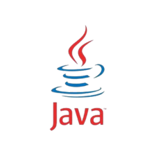

Lógica Computacional
Linguagem de Programação:
Linguagens de programação são conjuntos organizados de regras, símbolos e comandos usados para criar programas, sistemas e qualquer tipo de software. Elas funcionam como uma forma de comunicação entre o ser humano e o computador.
Como os computadores não entendem nossa língua natural, precisamos traduzir nossas ideias para uma linguagem que eles compreendam. É aí que entram as linguagens de programação: elas transformam pensamentos em ações, permitindo que um computador execute tarefas, tome decisões e realize cálculos.
Alguns Tipos de Linguagem de Programação:
C++:
C++ é uma linguagem poderosa, rápida e muito usada em sistemas que exigem grande desempenho, como jogos, softwares profissionais, sistemas operacionais e aplicações de alto processamento. Ela oferece bastante controle sobre a memória, o que permite extrair o máximo da máquina, mas também exige mais atenção do programador.

JavaScript:
JavaScript é a linguagem que dá vida aos sites. Ela roda direto no navegador e é responsável por tudo que é dinâmico em páginas web: botões que reagem, animações, menus, interações e até aplicações completas.
Hoje, com tecnologias como Node.js, o JavaScript também pode rodar no servidor, permitindo criar sistemas completos utilizando uma única linguagem.
Java:
Java é uma linguagem extremamente utilizada no mundo corporativo devido à sua estabilidade, segurança e capacidade de rodar em praticamente qualquer sistema. Tem o famoso lema “escreva uma vez, rode em qualquer lugar”. É utilizada em aplicativos Android, sistemas bancários, softwares empresariais, servidores e até aplicações científicas.
Python:
Python é uma das linguagens mais populares do mundo, conhecida por sua simplicidade e legibilidade. Muitas pessoas começam por ela justamente por ser fácil de entender e muito parecida com o inglês.
É amplamente usada em inteligência artificial, ciência de dados, automação, robótica, análise de dados e desenvolvimento web.

PHP:
PHP é uma linguagem muito usada para desenvolvimento web no lado do servidor. Ela é responsável por gerar páginas dinâmicas, lidar com formulários, gerenciar dados e conectar com bancos de dados.
Muitos dos maiores sites do mundo, incluindo plataformas gigantes, já usaram ou ainda usam PHP como base, além de sistemas como WordPress.
Linguagem de Programação Interpretada:
Uma linguagem interpretada é aquela em que o código é executado linha por linha, diretamente por um interpretador.
Isso significa que o programa lê seu código aos poucos, entende o que cada linha faz e já coloca em prática, sem precisar transformar tudo em um arquivo final antes da execução.
Linguagem de Programação Compilada:
Uma linguagem compilada funciona de maneira diferente. Antes de rodar o programa, um compilador transforma todo o código-fonte em um arquivo executável, escrito em linguagem de máquina — que o computador entende diretamente.
Só depois dessa etapa é que o programa pode ser executado.
HTML:
HTML significa HyperText Markup Language, e é a linguagem usada para criar a estrutura de páginas na web.
Ele funciona como o “esqueleto” de um site. É com o HTML que você define onde ficam os textos, títulos, imagens, botões, links, tabelas, vídeos e todo o conteúdo que aparece na tela.
CSS:
CSS significa Cascading Style Sheets e é a linguagem responsável pela aparência de um site.
Enquanto o HTML monta a estrutura, o CSS deixa tudo bonito: define cores, tamanhos, fontes, espaçamentos, bordas, animações, alinhamentos e até efeitos visuais modernos.

O que é uma IDE:
Uma IDE, sigla para Integrated Development Environment ou Ambiente Integrado de Desenvolvimento, é um programa criado para facilitar a vida de quem desenvolve sistemas. Ela reúne em um único lugar tudo aquilo que um programador precisa para escrever, testar e organizar seu código. Em vez de usar vários programas separados, a IDE oferece editor de texto inteligente, ferramentas de depuração, sugestões automáticas, gerenciamento de arquivos e, muitas vezes, até simuladores e compiladores integrados.
Podemos imaginar uma IDE como uma “mesa de trabalho completa” para programar: ela entrega lápis, borracha, régua, calculadora e ainda te ajuda a não cometer erros enquanto escreve.
Visual Studio Code(VSCode):
O Visual Studio Code (VSCode) é uma das IDEs mais populares do mundo. Ele é leve, extremamente flexível e funciona com praticamente qualquer linguagem graças às extensões. Seu sistema de autocompletar e sua interface moderna deixam o processo de programar mais fluido, quase como se você tivesse um assistente do seu lado apontando caminhos, marcando erros e sugerindo melhorias. É muito usado por iniciantes e profissionais porque se adapta a qualquer tipo de projeto.
IntelliJ IDEA:
Já o IntelliJ IDEA é uma IDE mais robusta, muito usada principalmente para desenvolvimento em Java, Kotlin e outras linguagens da plataforma JVM. Ele oferece recursos avançados que analisam o código em tempo real, sugerem correções inteligentes e ajudam a evitar bugs antes mesmo de executar o programa. Usar o IntelliJ é quase como trabalhar com um “mentor experiente” que entende profundamente a linguagem e te guia enquanto você escreve.
Scripts Envolvendo JavaScript
Ir para Fundamento Banco de Dados